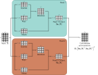

import numpy as np
import matplotlib.pyplot as pltDot-product self-attention
The previous section argued that a model for processing text will
- use parameter sharing to cope with long input passages of differing lengths and
- contain connections between word representations that depend on the words themselves.
The transformer acquires both properties by using dot-product self-attention.
Value Vectors
Value vectors in the context of self-attention are adjusted embeddings of the input tokens, capturing their information or semantics in a form that can be effectively combined with other tokens’ information (through the attention mechanism). In other words, the value vector still satisfy the property that similar input tokens have similar value vectors.
First, a set of Value vectors are computed for each input:
\[\begin{eqnarray}\label{eq:transformer_values} \mathbf{v}_{m} = \boldsymbol\beta_{v}+\boldsymbol\Omega_{v}\mathbf{x}_{m}, \end{eqnarray}\]
where \(\boldsymbol\beta_{v} ∈ \mathbb{R}^{D×1}\) and \(\boldsymbol\Omega_{v} ∈ \mathbb{R}^{D×D}\) represent biases and weights, respectively.
Note that the subscript \(m\) in \(\mathbf{v}_{m}\) corresponds to the mth input \(\mathbf{x}_{m}\) and \(m \in \{1, \ldots, N\}\). More importantly note that only the value vector \(\mathbf{v}_{m}\) and input vector \(\mathbf{x}_{m}\) have the subscript \(m\). Both beta and Omega do not have the subscript \(m\) but have the subscripts \(v\) to indicate that they are associated with the value vectors and not specific to any particular input. In other words, the same parameters \(\boldsymbol\beta_{v}\) and \(\boldsymbol\Omega_{v}\) are shared by all inputs.

Contrast this with a fully connected layer. In case of a fully connected layer, the weight matrix \(\Omega\) would have been dense and of dimension \((N\times D) \times (N\times D)\). In self-attention, however, the weights \(\boldsymbol\Omega_{v}\) are shared across all inputs, which allows the model to maintain permutation invariance and efficiently handle variable-length sequences.
Therefore, the equation \(\mathbf{v}_{m} = \boldsymbol\beta_{v}+\boldsymbol\Omega_{v}\mathbf{x}_{m}\) shows that the same weights \(\Omega_v ∈ \mathbb{R}^{D×D}\) and biases \(\beta_v ∈ \mathbb{R}^{D}\) are applied to each input \(x_• \in \mathbb{R}^{D}\).
This computation scales linearly with the sequence length N, so it needs fewer parameters than a fully connected network relating all DN inputs to all DN values.
In fact, the value computation can be viewed as a sparse matrix operation with shared parameters that relates these DN quantities (figure 12.2b).
Self-Attention Block
A self-attention block \(\mathbf{sa}[•]\) takes N inputs \(\mathbf{x}_1,...,\mathbf{x}_N\), each of dimension \(D\times 1\),
and returns N outputs \(\mathbf{sa}_1[\mathbf{x}_1,...,\mathbf{x}_N],...,\mathbf{sa}_N[\mathbf{x}_1,...,\mathbf{x}_N]\), each of which is also of size \(D\times 1\).
\(D\) is the embedding dimension of each token and \(N\) is the number of input tokens.
Then the nth output \(\mathbf{sa}_{n}[\mathbf{x}_{1},\ldots, \mathbf{x}_{N}]\) is a weighted sum of all the values \(\mathbf{v}_{1},\ldots,\mathbf{v}_{N}\):
\[\begin{eqnarray}\label{eq:transformer_sattention1} \mbox{{\bf sa}}_{n}[\mathbf{x}_{1},\ldots, \mathbf{x}_{N}] = \sum_{m=1}^{N}a[\mathbf{x}_{m}, \mathbf{x}_{n}]\mathbf{v}_{m}. \end{eqnarray}\]
The scalar weight a[\(\mathbf{x}_{m},\mathbf{x}_{n}\)] is the attention that the nth output pays to input \(\mathbf{x}_{m}\).
The \(N\) weights \(a[•,\mathbf{x}_{n}]\) are non-negative and sum to one.
Hence, self-attention can be thought of as routing the values in different proportions to create each output (figure 12.1).
The attention weights \(a[\mathbf{x}_m,\mathbf{x}_n]\) combine the values from different inputs.
They are also sparse since there is only one weight for each ordered pair of inputs \((\mathbf{x}_m,\mathbf{x}_n)\), regardless of the size of these inputs (figure 12.2c).
It follows that the number of attention weights has a quadratic dependence on the sequence length N, but is independent of the length D of each input.

Self-attention as routing. The self-attention mechanism takes N inputs \(\mathbf{x}_1, . . . , \mathbf{x}_N ∈ \mathbb{R}^{D}\) (here N = 3 and D = 4) and processes each separately to compute N value vectors.
The nth output \(\mathbf{sa}_{n}[\mathbf{x}_1, . . . , \mathbf{x}_N]\) (written as \(\mathbf{sa}_{n}[\mathbf{x}_•]\) for short) is then computed as a weighted sum of the N value vectors, where the weights are positive and sum to one.
Output \(\mathbf{sa}_{1}[\mathbf{x}_•]\) is computed as \(a[\mathbf{x}_1, \mathbf{x}_1] = 0.1\) times the first value vector, \(a[\mathbf{x}_2, \mathbf{x}_1] = 0.3\) times the second value vector, and \(a[\mathbf{x}_3, \mathbf{x}_1] = 0.6\) times the third value vector.
Output \(\mathbf{sa}_{2}[\mathbf{x}_•]\) is computed in the same way, but this time with weights of \(0.5, 0.2\), and \(0.3\).
The weighting for output \(\mathbf{sa}_{3}[\mathbf{x}_•]\) is different again. Each output can hence be thought of as a different routing of the N values.

Self-attention for N =3 inputs \(\mathbf{x}_n\), each with dimension D=4.
Each input \(\mathbf{x}_m\) is operated on independently by the same weights \(\Omega_v\) (same color equals same weight) and biases \(\beta_v\) (not shown) to form the values \(\beta_v + \Omega_v\mathbf{x}_m\).
Each output is a linear combination of the values, with the attention weight \(a[\mathbf{x}_m, \mathbf{x}_n]\) defining the contribution of the \(m\)th value to the \(n\)th output.
Matrix showing block sparsity of linear transformation \(\Omega_v\) between inputs and values.
Matrix showing sparsity of attention weights relating values and outputs.
Query vectors, Key vectors and Attention Weights
In the previous section, we saw that the outputs result from two chained linear transformations; the value vectors \(\beta_v + \Omega_v \mathbf{x}_m\) are computed independently for each input \(\mathbf{x}_m\), and these vectors are combined linearly by the attention weights \(a[\mathbf{x}_m,\mathbf{x}_n]\).
However, the overall self-attention computation is nonlinear.
As we’ll see shortly, the attention weights are themselves nonlinear functions of the input.
This is an example of a hypernetwork, where one network branch computes the weights of another. To compute the attention, we apply two more linear transformations to the inputs:
\[\begin{eqnarray} \mathbf{q}_{n} &=& \boldsymbol\beta_{q}+\boldsymbol\Omega_{q}\mathbf{x}_{n}\nonumber \\ \mathbf{k}_{m} &=& \boldsymbol\beta_{k}+\boldsymbol\Omega_{k}\mathbf{x}_{m}, \end{eqnarray}\]
where \(\mathbf{q}_n\) and \(\mathbf{k}_m\) are termed queries and keys, respectively. Then we compute dot products between the queries and keys and pass the results through a softmax function:
\[\begin{eqnarray}\label{eq:transformer_sattention2} a[\mathbf{x}_{m},\mathbf{x}_{n}] &=& \mbox{softmax}_{m}\left[\mathbf{k}_{\bullet}^{T}\mathbf{q}_{n}\right]\nonumber\\ \\ &=& \frac{\exp\left[\mathbf{k}_{m}^{T}\mathbf{q}_{n}\right]}{\sum_{m'=1}^{N}\exp\left[\mathbf{k}_{m'}^{T}\mathbf{q}_{n} \right]}, \end{eqnarray}\]
so for each \(\mathbf{x}_n\), they are positive and sum to one (figure 12.3). For obvious reasons, this is known as dot-product self-attention.
The names “queries” and “keys” were inherited from the field of information retrieval and have the following interpretation: the dot product operation returns a measure of similarity between its inputs, so the weights \(a[\mathbf{x}_\bullet,\mathbf{x}_n]\) depend on the relative similarities between the nth query and all of the keys. The softmax function means that the key vectors “compete” with one another to contribute to the final result. The queries and keys must have the same dimensions. However, these can differ from the dimension of the values, which is usually the same size as the input, so the representation doesn’t change size.

Computing attention weights. a) Query vectors qn = βq + Ωqxn and key vectors kn = βk + Ωkxn are computed for each input xn. b) The dot products between each query and the three keys are passed through a softmax function to form non-negative attentions that sum to one. c) These route the value vectors (figure 12.1) via the sparse matrix from figure 12.2c.
Non-linearity in self-attention
Self-attention does not require an explicit activation function such as ReLU to introduce non-linearity. Although the queries, keys, and values are computed using linear transformations, the attention weights depend nonlinearly on the inputs.
Non-linearity enters in two places:
- Dot-product scores. Each score combines a query and a key, both of which depend on \(\mathbf{X}\). Consequently, \(\mathbf{Q}\mathbf{K}^{\mathsf T}\) is quadratic in the input, rather than linear.
- Softmax weights. Softmax exponentiates the scores and normalizes them so that the weights in each row sum to one. This is a nonlinear transformation of the scores.
Each output is a weighted sum of value vectors:
\[ \mathbf{y}_i=\sum_j \alpha_{ij}(\mathbf{X})\,\mathbf{v}_j. \]
For fixed weights \(\alpha_{ij}\), this sum would be linear in the values. In self-attention, however, the weights themselves change with the input. Changing a word can therefore change both its value vector and how information is combined across the sequence. This dependence makes the overall mapping nonlinear.
Matrix form
The above computation can be written in a compact form if the N inputs \(\mathbf{x}_n\) form the columns of the D×N matrix \(\mathbf{X}\). The values, queries, and keys can be computed as:
\[\begin{eqnarray} \mathbf{V}[\mathbf{X}] &=& \boldsymbol\beta_{v}\mathbf{1}^{T}+\boldsymbol\Omega_{\textit{v}}\mathbf{X}\nonumber \\ \mathbf{Q}[\mathbf{X}] &=& \boldsymbol\beta_{q}\mathbf{1}^{T}+\boldsymbol\Omega_{\textit{q}}\mathbf{X}\nonumber \\ \mathbf{K}[\mathbf{X}] &=& \boldsymbol\beta_{k}\mathbf{1}^{T}+\boldsymbol\Omega_{\textit{k}}\mathbf{X}, \end{eqnarray}\]
where \(\mathbf{1}\) is an N ×1 vector containing ones. The self-attention computation is then:
\[\begin{eqnarray} \mbox{{\bf Sa}}[\mathbf{X}] =\mathbf{V}[\mathbf{X}]\cdot\mbox{\bf Softmax}\Bigl[\mathbf{K}[\mathbf{X}]^{T}\mathbf{Q}[\mathbf{X}]\Bigr], \end{eqnarray}\]
where the function \(\mbox{\bf Softmax}[•]\) takes a matrix and performs the softmax operation independently on each of its columns (figure 12.4). In this formulation, we have explicitly included the dependence of the values, queries, and keys on the input X to emphasize that self-attention computes a kind of triple product based on the inputs. However, from now on, we will drop this dependence and just write:
\[\begin{eqnarray}\label{eq:transformer_sa_matrix} \mbox{{\bf Sa}}[\mathbf{X}] =\mathbf{V}\cdot\mbox{\bf Softmax}\Bigl[\mathbf{K}^{T}\mathbf{Q}\Bigr]. \end{eqnarray}\]

Self-attention in matrix form. Self-attention can be implemented efficiently if we store the N input vectors xn in the columns of the D×N matrix X. The input X is operated on separately by the query matrix Q, key matrix K, and value matrix V. The dot products are then computed using matrix multiplication, and a softmax operation is applied independently to each column of the resulting matrix to calculate the attentions. Finally, the values are post-multiplied by the attentions to create an output of the same size as the input.
The self-attention mechanism maps \(N\) inputs $ ^D $and returns \(x^{\prime} \in \mathbb{R}^D\) outputs .
# Set seed so we get the same random numbers
np.random.seed(3)
# Number of inputs
N = 3
# Number of dimensions of each input
D = 4
# Create an empty list
all_x = []
# Create elements x_n and append to list
for n in range(N):
all_x.append(np.random.normal(size=(D,1)))
# Print out the list
print(all_x)[array([[ 1.78862847],
[ 0.43650985],
[ 0.09649747],
[-1.8634927 ]]), array([[-0.2773882 ],
[-0.35475898],
[-0.08274148],
[-0.62700068]]), array([[-0.04381817],
[-0.47721803],
[-1.31386475],
[ 0.88462238]])]We’ll also need the weights and biases for the keys, queries, and values (equations 12.2 and 12.4)
# Set seed so we get the same random numbers
np.random.seed(0)
# Choose random values for the parameters
omega_q = np.random.normal(size=(D,D))
omega_k = np.random.normal(size=(D,D))
omega_v = np.random.normal(size=(D,D))
beta_q = np.random.normal(size=(D,1))
beta_k = np.random.normal(size=(D,1))
beta_v = np.random.normal(size=(D,1))Now let’s compute the queries, keys, and values for each input
# Make three lists to store queries, keys, and values
all_queries = []
all_keys = []
all_values = []
# For every input
for x in all_x:
# Compute the keys, queries and values.
query = (omega_q @ x) + beta_q
key = (omega_k @ x) + beta_k
value = (omega_v @ x) + beta_v
all_queries.append(query)
all_keys.append(key)
all_values.append(value)We’ll need a softmax function (equation 12.5) – here, it will take a list of arbitrary numbers and return a list where the elements are non-negative and sum to one
def softmax(items_in):
# Compute the elements of items_out
items_out = np.exp(items_in - np.max(items_in))
items_out /= np.sum(items_out)
return items_out ;Now compute the self attention values:
# Create emptymlist for output
all_x_prime = []
# For each output
for n in range(N):
# Create list for dot products of query N with all keys
all_km_qn = []
# Compute the dot products
for key in all_keys:
# Compute the appropriate dot product
dot_product = all_queries[n].T @ key
# Store dot product
all_km_qn.append(dot_product)
# Compute dot product
attention = softmax(all_km_qn)
# Print result (should be positive sum to one)
print("Attentions for output ", n)
print(attention)
# Compute a weighted sum of all of the values according to the attention
x_prime = np.zeros_like(all_values[0])
for m in range(N):
x_prime += attention[m] * all_values[m]
all_x_prime.append(x_prime)
# Print out true values to check you have it correct
print("x_prime_0_calculated:", all_x_prime[0].transpose())
print("x_prime_0_true: [[ 0.94744244 -0.24348429 -0.91310441 -0.44522983]]")
print("x_prime_1_calculated:", all_x_prime[1].transpose())
print("x_prime_1_true: [[ 1.64201168 -0.08470004 4.02764044 2.18690791]]")
print("x_prime_2_calculated:", all_x_prime[2].transpose())
print("x_prime_2_true: [[ 1.61949281 -0.06641533 3.96863308 2.15858316]]")Attentions for output 0
[[[1.24326146e-13]]
[[9.98281489e-01]]
[[1.71851130e-03]]]
Attentions for output 1
[[[2.79525306e-12]]
[[5.85506360e-03]]
[[9.94144936e-01]]]
Attentions for output 2
[[[0.00505708]]
[[0.00654776]]
[[0.98839516]]]
x_prime_0_calculated: [[ 0.94744244 -0.24348429 -0.91310441 -0.44522983]]
x_prime_0_true: [[ 0.94744244 -0.24348429 -0.91310441 -0.44522983]]
x_prime_1_calculated: [[ 1.64201168 -0.08470004 4.02764044 2.18690791]]
x_prime_1_true: [[ 1.64201168 -0.08470004 4.02764044 2.18690791]]
x_prime_2_calculated: [[ 1.61949281 -0.06641533 3.96863308 2.15858316]]
x_prime_2_true: [[ 1.61949281 -0.06641533 3.96863308 2.15858316]]Now let’s compute the same thing, but using matrix calculations. We’ll store the inputs in the columns of a matrix, using equations 12.6 and 12.7/8.
Note: The book uses column vectors (for compatibility with the rest of the text), but in the wider literature it is more normal to store the inputs in the rows of a matrix; in this case, the computation is the same, but all the matrices are transposed and the operations proceed in the reverse order.
# Define softmax operation that works independently on each column
def softmax_cols(data_in):
# Exponentiate all of the values
exp_values = np.exp(data_in) ;
# Sum over columns
denom = np.sum(exp_values, axis = 0);
# Replicate denominator to N rows
denom = np.matmul(np.ones((data_in.shape[0],1)), denom[np.newaxis,:])
# Compute softmax
softmax = exp_values / denom
# return the answer
return softmax
# Now let's compute self attention in matrix form
def self_attention(X,omega_v, omega_q, omega_k, beta_v, beta_q, beta_k):
# 1. Compute queries, keys, and values
# 2. Compute dot products
# 3. Apply softmax to calculate attentions
# 4. Weight values by attentions
# Replace this line
all_queries = (omega_q @ X) + beta_q
all_keys = (omega_k @ X) + beta_k
all_values = (omega_v @ X) + beta_v
X_prime = (softmax_cols(all_queries.T @ all_keys) @ all_values.T).T
return X_prime
# Copy data into matrix
X = np.zeros((D, N))
X[:,0] = np.squeeze(all_x[0])
X[:,1] = np.squeeze(all_x[1])
X[:,2] = np.squeeze(all_x[2])
# Run the self attention mechanism
X_prime = self_attention(X,omega_v, omega_q, omega_k, beta_v, beta_q, beta_k)
# Print out the results
print(X_prime)
[[ 0.04934405 1.77317658 -1.94113808]
[-0.01271124 -0.21651166 3.45551881]
[-0.048059 2.26943944 -6.01580286]
[-0.02345359 1.26473743 -2.5239172 ]]If you did this correctly, the values should be the same as above.
TODO:
Print out the attention matrix You will see that the values are quite extreme (one is very close to one and the others are very close to zero. Now we’ll fix this problem by using scaled dot-product attention.
# Now let's compute self attention in matrix form
def scaled_dot_product_self_attention(X,omega_v, omega_q, omega_k, beta_v, beta_q, beta_k):
# 1. Compute queries, keys, and values
# 2. Compute dot products
# 3. Scale the dot products as in equation 12.9
# 4. Apply softmax to calculate attentions
# 5. Weight values by attentions
# Replace this line
all_queries = (omega_q @ X) + beta_q
all_keys = (omega_k @ X) + beta_k
all_values = (omega_v @ X) + beta_v
X_prime = np.zeros_like(X)
# Compute the dot products
dot_products = all_queries.T @ all_keys
# Scale the dot products
scale_factor = np.sqrt(all_keys.shape[0])
scaled_dot_products = dot_products / scale_factor
# Apply softmax to calculate attentions
attentions = softmax_cols(scaled_dot_products)
# Weight values by attentions
X_prime = (attentions @ all_values.T).T
return X_prime
# Run the self attention mechanism
X_prime = scaled_dot_product_self_attention(X,omega_v, omega_q, omega_k, beta_v, beta_q, beta_k)
# Print out the results
print(X_prime) [[ 0.13752296 1.48061754 -1.73675795]
[-0.03523951 -0.1745895 3.43612491]
[-0.13084049 1.99604787 -5.6596298 ]
[-0.06373021 1.10938021 -2.32828337]]Scaled dot-product self-attention
The dot products in the attention computation can have large magnitudes and move the arguments to the softmax function into a region where the largest value completely dominates.
Small changes to the inputs to the softmax function now have little effect on the output (i.e., the gradients are very small), making the model difficult to train. To prevent this, the dot products are scaled by the square root of the dimension \(D_q\) of the the queries and keys (i.e., the number of rows in \(\boldsymbol\Omega_q\) and \(\boldsymbol\Omega_k\), which must be the same):
\[\begin{eqnarray} \mbox{{\bf Sa}}[\mathbf{X}] =\mathbf{V}\cdot\mbox{\bf Softmax}\left[\frac{\mathbf{K}^{T}\mathbf{Q}}{\sqrt{D}_{q}}\right]. \end{eqnarray}\]
This is known as scaled dot-product self-attention.
Multiple heads
Multiple self-attention mechanisms are usually applied in parallel, and this is known as multi-head self-attention. Now \(H\) different sets of values, keys, and queries are computed:
\[\begin{eqnarray} \mathbf{V}_h &=& \boldsymbol\beta_{vh}\mathbf{1}^{T}+\boldsymbol\Omega_{\mathit{vh}}\mathbf{X}\nonumber \\ \mathbf{Q}_h &=& \boldsymbol\beta_{qh}\mathbf{1}^{T}+\boldsymbol\Omega_{\mathit{qh}}\mathbf{X}\nonumber \\ \mathbf{K}_h &=& \boldsymbol\beta_{kh}\mathbf{1}^{T}+\boldsymbol\Omega_{\mathit{kh}}\mathbf{X}. \end{eqnarray}\]
The \(h\)th self-attention mechanism or head can be written as:
\[\begin{eqnarray} \mbox{{\bf Sa}}_{h}[\mathbf{X}] =\mathbf{V}_h\cdot\mbox{\bf Softmax}\left[\frac{\mathbf{K}_h^{T}\mathbf{Q}_h}{\sqrt{D}_{q}}\right], \end{eqnarray}\]
where we have different parameters \(\{\boldsymbol\beta_{vh},\boldsymbol\Omega_{vh}\}\), \(\{\boldsymbol\beta_{qh},\boldsymbol\Omega_{qh}\}\), and \(\{\boldsymbol\beta_{kh},\boldsymbol\Omega_{kh}\}\) for each head. Typically, if the dimension of the inputs \(\mathbf{x}_m\) is \(D\) and there are \(H\) heads, the values, queries, and keys will all be of size \(D/H\), as this allows for an efficient implementation. The outputs of these self-attention mechanisms are vertically concatenated, and another linear transform \(\boldsymbol\Omega_c\) is applied to combine them (figure 12.6):

Multi-head self-attention. Self-attention occurs in parallel across multiple “heads.” Each has its own queries, keys, and values. Here two heads are depicted, in the cyan and orange boxes, respectively. The outputs are vertically concatenated, and another linear transformation Ωc is used to recombine them.
\[\begin{eqnarray} \mbox{{\bf MhSa}}[\mathbf{X}] = \boldsymbol\Omega_{c}\Bigl[\mbox{{\bf Sa}}_{1}[\mathbf{X}]^T,\mbox{{\bf Sa}}_{2}[\mathbf{X}]^T,\ldots,\mbox{{\bf Sa}}_{H}[\mathbf{X}]^T \Bigr]^T. \end{eqnarray}\]
Multiple heads seem to be necessary to make self-attention work well. It has been speculated that they make the self-attention network more robust to bad initializations.
Transformer layers
Self-attention is just one part of a larger transformer layer. This consists of a multi- head self-attention unit (which allows the word representations to interact with each other) followed by a fully connected network \(\textbf{mlp}[\mathbf{x}_\bullet]\) (that operates separately on each word). Both units are residual networks (i.e., their output is added back to the original input). In addition, it is typical to add a LayerNorm operation after both the self- attention and fully connected networks. This is similar to BatchNorm but normalizes each embedding in each batch element separately using statistics calculated across its D embedding dimensions (section 11.4 and figure 11.14). The complete layer can be described by the following series of operations (figure 12.7):

Transformer layer. The input consists of a D × N matrix containing the D-dimensional word embeddings for each of the N input tokens. The output is a matrix of the same size. The transformer layer consists of a series of operations. First, there is a multi-head attention block, allowing the word embeddings to interact with one another. This forms the processing of a residual block, so the inputs are added back to the output. Second, a LayerNorm operation is applied separately to each embedding. Third, there is a second residual layer where the same fully connected neural network is applied separately to each of the N word representations (columns). Finally, LayerNorm is applied again.
\[\begin{eqnarray} \mathbf{X} &\leftarrow& \mathbf{X} + \mbox{\bf{MhSa}}[\mathbf{X}] \nonumber \\ \mathbf{X} &\leftarrow& \mbox{\bf{LayerNorm}}[\mathbf{X}] \hspace{3cm}\nonumber\\ \mathbf{x}_{n} &\leftarrow& \mathbf{x}_{n}+\mbox{\bf{mlp}}[\mathbf{x}_{n}] \hspace{3.6cm}\forall\; n\in\{1,\ldots, N\}\nonumber\\ \mathbf{X} &\leftarrow& \mbox{\bf{LayerNorm}}[\mathbf{X}], \end{eqnarray}\]
where the column vectors xn are separately taken from the full data matrix X. In a real network, the data passes through a series of these transformer layers.
The multihead self-attention mechanism maps \(N\) inputs \(\mathbf{x_n} \in \mathbb{R}^D\) and returns N outputs \(\mathbf{x^{\prime}} \in \mathbb{R}^D\) .
import numpy as np
import matplotlib.pyplot as plt
# Set seed so we get the same random numbers
np.random.seed(3)
# Number of inputs
N = 6
# Number of dimensions of each input
D = 8
# Create an empty list
X = np.random.normal(size=(D,N))
# Print X
print(X)[[ 1.789 0.437 0.096 -1.863 -0.277 -0.355]
[-0.083 -0.627 -0.044 -0.477 -1.314 0.885]
[ 0.881 1.71 0.05 -0.405 -0.545 -1.546]
[ 0.982 -1.101 -1.185 -0.206 1.486 0.237]
[-1.024 -0.713 0.625 -0.161 -0.769 -0.23 ]
[ 0.745 1.976 -1.244 -0.626 -0.804 -2.419]
[-0.924 -1.024 1.124 -0.132 -1.623 0.647]
[-0.356 -1.743 -0.597 -0.589 -0.874 0.03 ]]We’ll use two heads. We’ll need the weights and biases for the keys, queries, and values (equations 12.2 and 12.4). We’ll use two heads, and (as in the figure), we’ll make the queries keys and values of size D/H
# Number of heads
H = 2
# QDV dimension
H_D = int(D/H)
# Set seed so we get the same random numbers
np.random.seed(0)
# Choose random values for the parameters for the first head
omega_q1 = np.random.normal(size=(H_D,D))
omega_k1 = np.random.normal(size=(H_D,D))
omega_v1 = np.random.normal(size=(H_D,D))
beta_q1 = np.random.normal(size=(H_D,1))
beta_k1 = np.random.normal(size=(H_D,1))
beta_v1 = np.random.normal(size=(H_D,1))
# Choose random values for the parameters for the second head
omega_q2 = np.random.normal(size=(H_D,D))
omega_k2 = np.random.normal(size=(H_D,D))
omega_v2 = np.random.normal(size=(H_D,D))
beta_q2 = np.random.normal(size=(H_D,1))
beta_k2 = np.random.normal(size=(H_D,1))
beta_v2 = np.random.normal(size=(H_D,1))
# Choose random values for the parameters
omega_c = np.random.normal(size=(D,D))Now let’s compute the multiscale self-attention
# Define softmax operation that works independently on each column
def softmax_cols(data_in):
# Exponentiate all of the values
exp_values = np.exp(data_in) ;
# Sum over columns
denom = np.sum(exp_values, axis = 0);
# Compute softmax (numpy broadcasts denominator to all rows automatically)
softmax = exp_values / denom
# return the answer
return softmax
# Now let's compute self attention in matrix form
def multihead_scaled_self_attention(X,omega_v1, omega_q1, omega_k1, beta_v1, beta_q1, beta_k1, omega_v2, omega_q2, omega_k2, beta_v2, beta_q2, beta_k2, omega_c):
# Multihead scaled self-attention mechanism.
X_prime = omega_c @ np.vstack([
(softmax_cols((omega_q1 @ X + beta_q1).T @ (omega_k1 @ X + beta_k1) / np.sqrt(omega_q1.shape[0])) @ (omega_v1 @ X + beta_v1).T).T,
(softmax_cols((omega_q2 @ X + beta_q2).T @ (omega_k2 @ X + beta_k2) / np.sqrt(omega_q2.shape[0])) @ (omega_v2 @ X + beta_v2).T).T
])
return X_prime
# Run the self attention mechanism
X_prime = multihead_scaled_self_attention(X,omega_v1, omega_q1, omega_k1, beta_v1, beta_q1, beta_k1, omega_v2, omega_q2, omega_k2, beta_v2, beta_q2, beta_k2, omega_c)
# Print out the results
np.set_printoptions(precision=3)
print("Your answer:")
print(X_prime)
print("True values:")
print("[[-21.207 -5.373 -20.933 -9.179 -11.319 -17.812]")
print(" [ -1.995 7.906 -10.516 3.452 9.863 -7.24 ]")
print(" [ 5.479 1.115 9.244 0.453 5.656 7.089]")
print(" [ -7.413 -7.416 0.363 -5.573 -6.736 -0.848]")
print(" [-11.261 -9.937 -4.848 -8.915 -13.378 -5.761]")
print(" [ 3.548 10.036 -2.244 1.604 12.113 -2.557]")
print(" [ 4.888 -5.814 2.407 3.228 -4.232 3.71 ]")
print(" [ 1.248 18.894 -6.409 3.224 19.717 -5.629]]")
# If your answers don't match, then make sure that you are doing the scaling, and make sure the scaling value is correctYour answer:
[[-22.646 -5.784 3.482 -1.692 0.437 -8.298]
[ -0.909 -1.243 4.792 8.578 7.136 -7.41 ]
[ 4.784 2.155 0.244 1.903 5.343 3.26 ]
[ -9.995 0.143 0.422 -6.449 -1.252 -2.497]
[-12.711 -4.78 -0.733 -6.695 -3.892 0.755]
[ 1.337 -2.347 -12.407 3.273 3.644 -8.366]
[ 9.948 -1.418 13.564 -3.171 -4.017 6.666]
[ -2.163 5.145 -10.17 14.501 12.527 -10.373]]
True values:
[[-21.207 -5.373 -20.933 -9.179 -11.319 -17.812]
[ -1.995 7.906 -10.516 3.452 9.863 -7.24 ]
[ 5.479 1.115 9.244 0.453 5.656 7.089]
[ -7.413 -7.416 0.363 -5.573 -6.736 -0.848]
[-11.261 -9.937 -4.848 -8.915 -13.378 -5.761]
[ 3.548 10.036 -2.244 1.604 12.113 -2.557]
[ 4.888 -5.814 2.407 3.228 -4.232 3.71 ]
[ 1.248 18.894 -6.409 3.224 19.717 -5.629]]